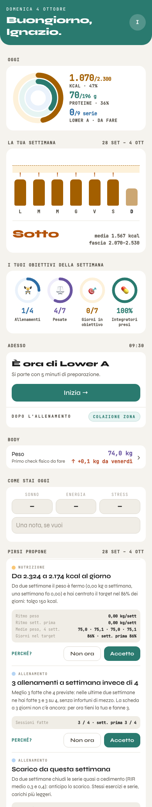
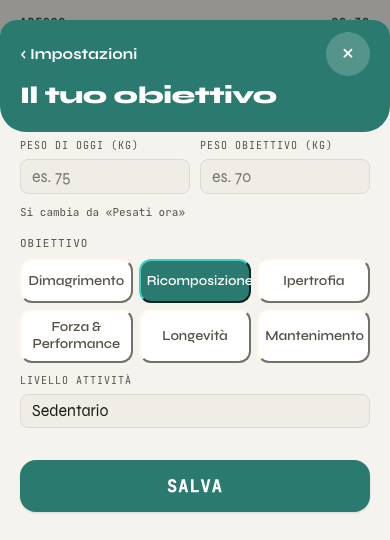
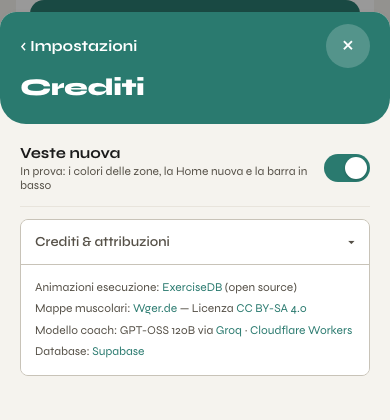
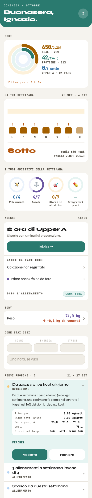
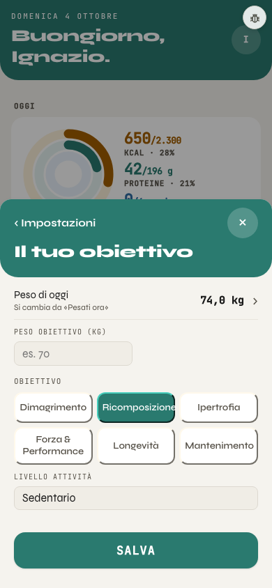
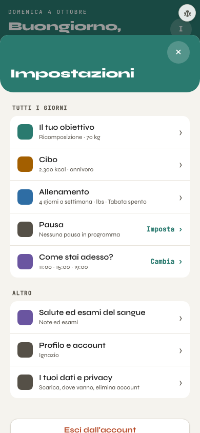

A sinistra le pagine vere di oggi (banco, 390 px, veste accesa, dati di prova del 4 ottobre: tre proposte di Pirsi, nessun check fisico fatto), a destra lo schizzo snellito. I tondi verdi 1 rimandano alle note del giro 1 (giro2_note.md): tre della Home, due delle Impostazioni.

Si parte con 5 minuti di preparazione.


?v5=0) finché non si decide di toglierla dal codice.?v5=0.Fotografie delle pagine costruite, non più disegno: stessi dati di prova del 4 ottobre (tre proposte vere di Pirsi per la settimana appena chiusa, nessun check fisico fatto, pesata di oggi 74,0 kg). Tutto dietro html.v5: a veste spenta Home e Impostazioni sono identiche al pixel a prima, salvo che l'interruttore e Crediti non ci sono più.



html.v5 (a veste spenta Home e Impostazioni restano identiche al pixel), tranne l'interruttore e Crediti, che sono usciti dalla pagina per tutti. Pirsi: cambia solo come si mostra la proposta, non cosa propone né cosa scrive «Accetto» (shared/coach_rules.js non si tocca). Il check: la stessa getNextCheckpointInfo(), letta in «Adesso» invece che nella riga Body. Nessuna lettura o scrittura nuova.